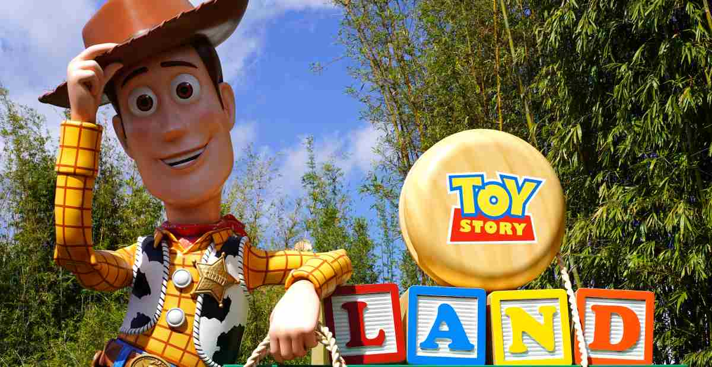

Walter Elias Disney (5 Desember 1901-15 Desember 1966) adalah seorang produser film, sutradara,
animator, dan pengisi suara berkebangsaan Amerika Serikat. Ia terkenal akan pengaruhnya terhadap dunia
hiburan pada abad ke-20. Sebagai tokoh pendiri Walt Disney Productions (bersama Roy O. Disney),
Disney menjadi salah satu produser film paling terkenal di dunia. seorang penerbit film tersohor
di dunia. Perusahaan yang didirikannya, kini dikenal sebagai The Walt Disney Company
kini memiliki pendapatan tahunan sekitar $ 35 miliar.
Disney terkenal sebagai produser film dan showman, dan juga inovator dalam bidang animasi dan desain
taman bermain. Ia dan anak buahnya menciptakan berbagai karakter terkenal dunia, seperti Mickey Mouse
yang disuarakan oleh Disney sendiri. Ia telah memenangkan 26 Academy Awards dari 59 nominasi. Selain
itu, Disney juga meraih 7 Emmy Awards.
Walter Elias Disney (5 Desember 1901-15 Desember 1966) adalah seorang produser film, sutradara,
animator, dan pengisi suara berkebangsaan Amerika Serikat. Ia terkenal akan pengaruhnya terhadap dunia
hiburan pada abad ke-20. Sebagai tokoh pendiri Walt Disney Productions (bersama Roy O. Disney),
Disney menjadi salah satu produser film paling terkenal di dunia. seorang penerbit film tersohor
di dunia. Perusahaan yang didirikannya, kini dikenal sebagai The Walt Disney Company
kini memiliki pendapatan tahunan sekitar $ 35 miliar.
Disney terkenal sebagai produser film dan showman, dan juga inovator dalam bidang animasi dan desain
taman bermain. Ia dan anak buahnya menciptakan berbagai karakter terkenal dunia, seperti Mickey Mouse
yang disuarakan oleh Disney sendiri. Ia telah memenangkan 26 Academy Awards dari 59 nominasi. Selain
itu, Disney juga meraih 7 Emmy Awards.
Masa Kecil
Walter Elias Disney lahir pada tanggal 5 Desember 1901 di 2156 N. Tripp Ave, Hermosa, Chicago, Illinois, dari pasangan Elias Disney dan Flora Call. Nenek moyang Walt Disney beremigrasi dari Gowran, Irlandia. Arundel Elias Disney, kakek buyut Disney, lahir di Kilkenny, Irlandia, pada tahun 1801, dan merupakan keturunan dari Robert d'Isigny, orang Prancis yang berkelana ke Inggris bersama William sang Penakluk tahun 1066. Nama d'Isigny di Anglikanisasi menjadi Disney. Ayahnya, Elias Disney, pindah dari County Huron, Ontario, ke Amerika Serikat tahun 1878, untuk mencari emas di California, namun akhirnya bertani dengan orang tuanya di dekat Ellis, Kansas hingga tahun 1884. Elias bekerja untuk Union Pacific Railroad dan menikah dengan Flora Call pada 1 Januari 1888 di Acron, Florida. Keluarga mereka lalu pindah ke Chicago, Illinois, tahun 1890, tempat saudaranya Robert tinggal Pada tahun 1906, ketika Walt masih berusia empat tahun, Elias dan keluarganya pindah ke peternakan di Marceline, Missouri, tempat saudaranya Roy baru membeli tanah. Di Marceline, Disney mengembangkan minatnya terhadap seni lukis.
Film Disney 
Sejak memperkenalkan film kartun pertama mereka, Snow White and the Seven Dwarfs pada tahun 1937, Disney berhasil menghasilkan banyak film kartun yang menjadi favorit banyak orang dari segala usia dan menjadi tontonan seru di seluruh dunia. Film-film ini tidak hanya memukau dengan animasi yang indah, tetapi juga dengan cerita yang sangat menarik dan karakter yang ikonik. Setiap film Disney menawarkan pengalaman yang unik dengan tema dan karakter yang berbeda-beda, dan banyak di antaranya yang memenangkan banyak penghargaan. Selain itu, film-film ini mampu menarik perhatian banyak penonton sehingga menjadikannya sebagai tontonan yang sangat seru dan sangat menghibur bagi semua kalangan. Film kartun Disney selalu menghadirkan kisah-kisah menakjubkan dengan karakter-karakter ikonik. Salah satunya kisah Disney Princess yang menghadapi berbagai rintangan dalam hidupnya. Setiap film Disney Princess sering diidentikkan dengan kecantikan, kebaikan hati, dan keberanian dalam menghadapi berbagai rintangan, menjadikannya sebagai tontonan yang menyenangkan dan menghibur
Disney Live Action
Siapa yang tak mengenal dongeng-dongeng Disney yang penuh pesona dan keajaiban? Melalui transformasi dari animasi
menjadi live action, Disney telah menghadirkan kembali kisah-kisah ajaib tersebut dalam format yang lebih hidup
dan nyata. Di sini, kami telah merangkum beberapa rekomendasi film live action Disney terbaik yang siap memukau Anda
dengan keindahan visual, cerita yang memikat, dan akting yang mengesankan. Siap-siaplah untuk terhanyut dalam
dunia magis yang dipenuhi dengan pesona! Ada banyak koleksi film produksi Disney Studio yang semula merupakan
fitur animasi kemudian diadaptasi ke versi live action sehingga jadi lebih 'hidup'. Dengan visual yang lebih kuat,
tentu menjadikan film Disney yang dibuat live action ini mampu menarik animo masyarakat dari berbagai negara.
Disney menjadi salah satu rumah produksi yang mendominasi industri hiburan. Apalagi setelah mengakusisi waralaba Star Wars
dan Marvel yang menguasai layar lebar selama bertahun-tahun. Namun, salah satu terobosan mereka adalah menghidupkan
kembali kisah-kisah klasik melalui remake live-action yang menghadirkan aktor terkenal dan efek visual yang memukau.;
No.
film
Top Popular
No.
Live Action versi
Top Popular
1.
Frozen
8.5
1.
Maleficent
9.5
2.
Cinderella
7
2.
Mulan
9
3.
Raya and The Last Dragon
8.5
3.
cruella
9.5
4.
Snow White
7
4.
Aladin
9.5
5.
Encanto
8.5
2.
Beauty and The Beast
9
Daftar Isi
Siapa yang tak mengenal dongeng-dongeng Disney yang penuh pesona dan keajaiban? Melalui transformasi dari animasi menjadi live action, Disney telah menghadirkan kembali kisah-kisah ajaib tersebut dalam format yang lebih hidup dan nyata. Di sini, kami telah merangkum beberapa rekomendasi film live action Disney terbaik yang siap memukau Anda dengan keindahan visual, cerita yang memikat, dan akting yang mengesankan. Siap-siaplah untuk terhanyut dalam dunia magis yang dipenuhi dengan pesona! Ada banyak koleksi film produksi Disney Studio yang semula merupakan fitur animasi kemudian diadaptasi ke versi live action sehingga jadi lebih 'hidup'. Dengan visual yang lebih kuat, tentu menjadikan film Disney yang dibuat live action ini mampu menarik animo masyarakat dari berbagai negara. Disney menjadi salah satu rumah produksi yang mendominasi industri hiburan. Apalagi setelah mengakusisi waralaba Star Wars dan Marvel yang menguasai layar lebar selama bertahun-tahun. Namun, salah satu terobosan mereka adalah menghidupkan kembali kisah-kisah klasik melalui remake live-action yang menghadirkan aktor terkenal dan efek visual yang memukau.;
| No. | film | Top Popular | No. | Live Action versi | Top Popular |
|---|---|---|---|---|---|
| 1. | Frozen | 8.5 | 1. | Maleficent | 9.5 |
| 2. | Cinderella | 7 | 2. | Mulan | 9 |
| 3. | Raya and The Last Dragon | 8.5 | 3. | cruella | 9.5 |
| 4. | Snow White | 7 | 4. | Aladin | 9.5 |
| 5. | Encanto | 8.5 | 2. | Beauty and The Beast | 9 |